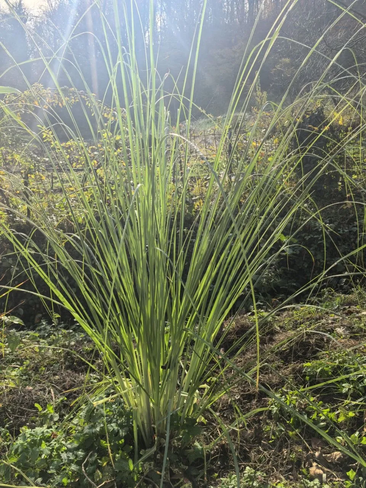
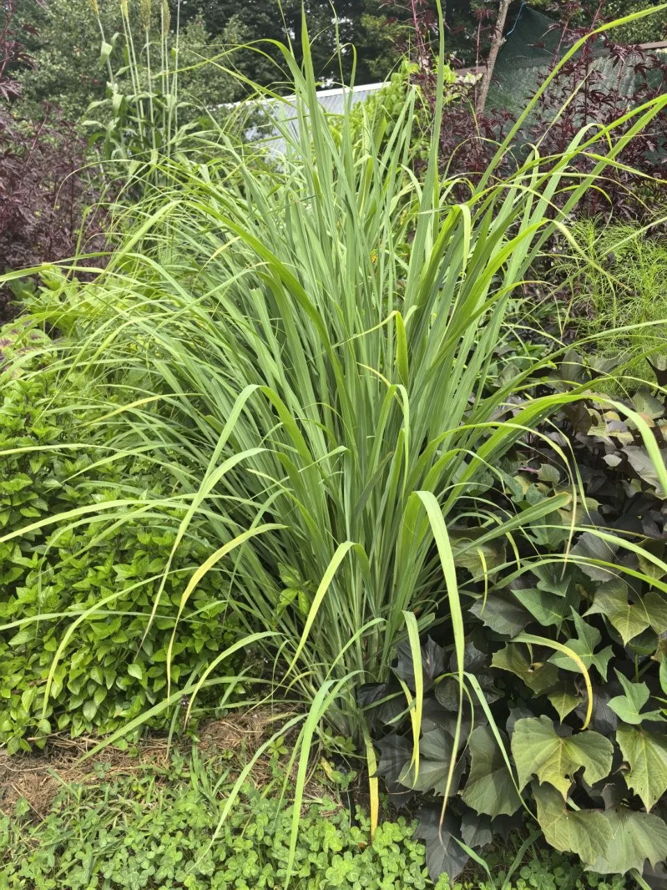

Пряная культура с лимонным ароматом и имбирной остринкой. Незаменимый ингредиент тайской кухни, используется для чая, супов и соусов. Обладает целебными свойствами.
Преимущества культуры для вашего участка.
Лемонграсс в процессе выращивания.


Всё, что нужно знать о культуре: от посадки до хранения.
Лемонграсс — теплолюбивое растение, которое можно выращивать как в саду летом, так и на подоконнике круглый год.
Стебли добавляют в супы (особенно тайские), соусы, маринады для мяса и рыбы. Из листьев заваривают ароматный чай. Можно сушить и использовать как пряность зимой.
Да, поставьте свежий стебель в воду — через 1–2 недели появятся корни. Затем пересадите в горшок. Это самый простой способ получить растение.
До заморозков выкопайте куст, посадите в горшок и занесите в дом. Держите на солнечном подоконнике, поливайте умеренно. Весной можно снова высадить в сад.
Оказывает успокаивающее, антиоксидантное, противовоспалительное и мягкое мочегонное действие. Повышает иммунитет, улучшает пищеварение.
Другие культуры из коллекции Batatchudo.
Посадочный материал из коллекции Batatchudo и рекомендации по выращиванию.